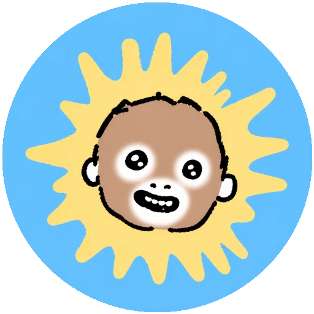
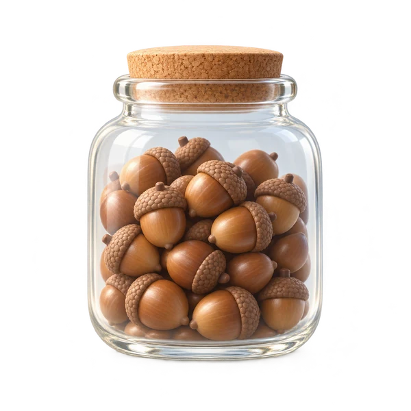

우땅이 팬페이지 (현재 서비스 중지)

우땅이와 함께하는 야구게임
2000년대 인터넷의 추억과 감성
내 생일은 어떤 캐릭터와 닮았을까?
크리스마스가 머지않았어요크리스마스마을에 방문하세요

날짜와 추억을 차곡차곡 모으는 앱
안녕하세요.웹·앱 서비스 기획 및 개발자Dotoryman입니다.
IT 회사에 근무중이고 기획, 웹·앱 서비스를 제작합니다.
날짜와 추억을차곡차곡 모으는 앱.
아직 준비 중입니다.서비스를 열면 이곳에 링크를 연결할게요.